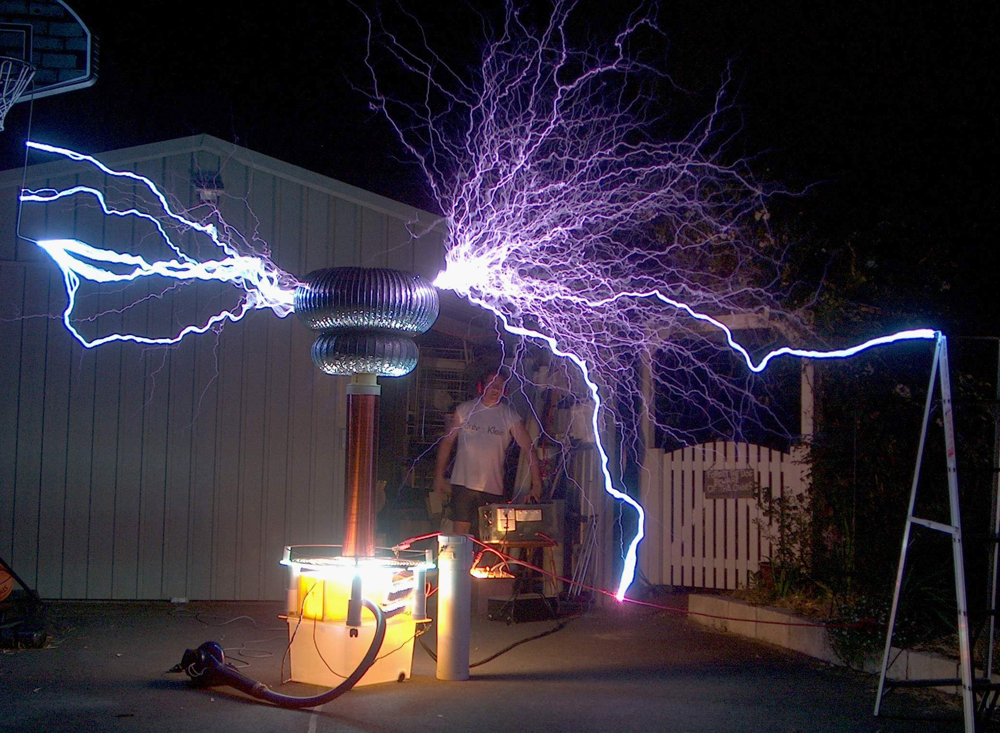
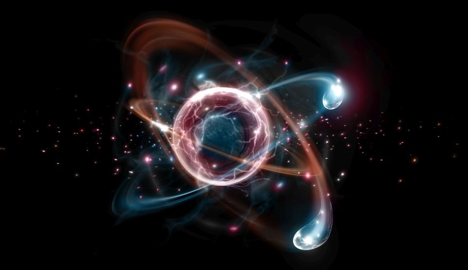
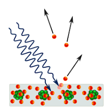
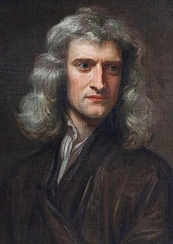
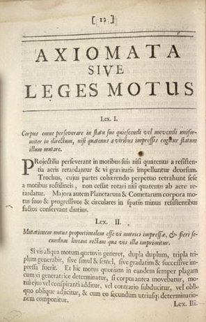
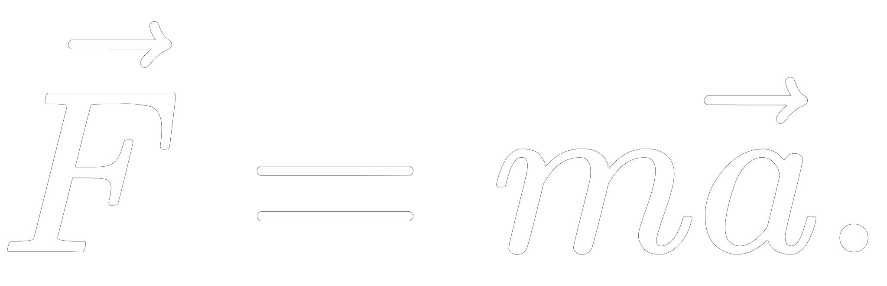

Nikola Testla s-a nascut la miezul noptii dintre 9 si 10 iulie 1856 Smiljan, Imperiul Austriac.
Acesta a fost un important om de stiinta, punand bazele constintelor moderne despre curentul alternativ, puterea
electrica, sisteme de curent aleternativ, sisteme polifazice, sisteme de distributie a puterii si motorul pe
curent aleternativ.
Amprenta lui Tesla poate fi observată în civilizația modernă oriunde este folosită electricitatea. Pe lângă
descoperirile sale despre electromagnetism și inginerie, Tesla este considerat un pionier în domeniile roboticii,
balisticii, științei calculatoarelor, fizicii nucleare și fizicii teoretice. Nikola Tesla considera cercetarea
diferitelor întrebări ridicate de către știință drept cea mai nobilă metodă de îmbunătățire a condiției umane cu
ajutorul principiilor științei și progresului industrial și una care să fie compatibilă cu natura.
Tesla a urmat cursurile școlii „Gymnasium Karlovac” în Karlovac, unde a terminat în doar trei ani ciclul de
învățământ de patru ani.
Ulterior a început studiile de inginerie electrică la Universitatea din Graz în 1875, timp în care a experimentat
unele utilități ale curentului alternativ. Unele surse afirmă că a fost licențiat al Universității din Graz,
cu toate acestea, universitatea afirmă că nu a obținut nicio diplomă și că nu a trecut mai departe de al doilea
semestru al anului trei, moment în care a renunțat la cursuri. Mai multe informatii aici.
Inventii:
Bobina Tesla

Poate cea mai cunoscuta inventie a geniului, bobina Tesla este un circuit de transformator
rezonant electric conceput in 1891.
Aceasta este o metodă utilizată pentru a produce electricitate în curent alternativ atât de înaltă
tensiune, cât și de joasă tensiune, de înaltă frecvență.
Tesla a folosit aceste circuite pentru a efectua experimente inovatoare în iluminatul electric,
fosforescență, generarea de raze X, fenomene de curent alternativ de înaltă frecvență, electroterapie și
transportul energiei electrice fără fire. Circuitele bobinelor Tesla au fost utilizate comercial în
emițătoare de radio sparkgap pentru telegrafie fără fir până în anii 1920 și în echipamente medicale cum
ar fi electroterapia și dispozitivele cu radiații violete. Astăzi, utilizarea lor principală este pentru
afișaje de divertisment și educație, deși bobinele mici sunt încă folosite ca detectori de scurgeri pentru
sistemele cu vid înalt.
Supapa Tesla
Supapa Tesla, numita conducta valvulara de catre inventatorul sau, este o supapa
de retinere cu geometrie fixa.Permite lichidelor sa curga intr-o singura directie, fara piese in miscare.
Albert Einstein
(14 martie 1879 - 18 aprilie 1955)
Albert Einstein s-a nascut pe 14 martie 1879 la Ulm in Imperiul German.
A fost un a fost un fizician teoretician evreu, apatrid din 1896, elvețian din 1899, emigrat în 1933 în SUA,
naturalizat american în 1940, profesor universitar la Berlin și Princeton.
A fost autorul teoriei relativității și unul dintre cei mai străluciți oameni de știință ai omenirii.
străluciți oameni de știință ai omenirii.
În 1921 i s-a decernat Premiul Nobel pentru Fizică[23].
Cele mai multe dintre contribuțiile sale în fizică sunt legate de teoria relativității restrânse (1905), care
unesc mecanica cu electromagnetismul, și de teoria relativității generalizate (1915) care extinde principiul
relativității mișcării neuniforme, elaborând o nouă teorie a gravitației.
Alte contribuții ale sale includ cosmologia relativistă, teoria capilarității, probleme clasice ale mecanicii
statistice cu aplicații în mecanica cuantică, explicarea mișcării browniene a moleculelor, probabilitatea
tranziției atomice, teoria cuantelor pentru gazul monoatomic, proprietățile termice ale luminii (al căror studiu a
condus la elaborarea teoriei fotonice), teoria radiației (ce include emisia stimulată), teoria câmpurilor unitară
și geometrizarea fizicii.
Mai multe informatii
aici.
Teori:
Teoria Relativității Restrânse

Cea de-a patra lucrare importantă publicată de Einstein în 1905, "Asupra electrodinamicii
corpurilor în mișcare", conținea ceea ce avea să fie cunoscută mai târziu ca Teoria relativității
restrânse, una dintre cele mai celebre contribuții ale sale, în care demonstrează că teoretic nu este
posibil să se decidă dacă două evenimente care se petrec în locuri diferite, au loc în același moment sau
nu. Ideile de bază au fost formulate de Einstein încă de când avea 16 ani (deci cu 10 ani în urmă).
Încă de la Newton, filozofii naturali (denumirea sub care erau cunoscuți fizicienii și chimiștii)
încercaseră să înțeleagă natura materiei și a radiației, precum și felul în care interacționau într-o
imagine unificata a lumii. Ideea că legile mecanicii sunt fundamentale era cunoscută drept concepția
mecanicistă asupra lumii, în timp ce ideea că legile electricității sunt fundamentale era cunoscută drept
concepția electromagnetică asupra lumii. Totuși, niciuna dintre idei nu era capabilă să ofere o explicație
coerentă asupra felului cum radiația (de exemplu lumina) și materia interactionează atunci când sunt
văzute din sisteme de referință inerțiale diferite, adică interacțiile sunt urmărite simultan de un
observator în repaus și un observator care se mișcă cu o viteză constantă.
Ipoteza fotonică

Efectul fotoelectric constituie unul din domeniile tratate în 1905. Pentru a
explica acest fenomen, care infirma caracterul ondulatoriu al luminii, Einstein explică mecanismul
emisiei de electroni utilizând ideile recente ale lui Max Planck, folosind termenul de "cuantă" (pachet de
energie). Pentru această lucrare, Einstein va primi Premiul Nobel pentru Fizică. Asta înseamnă că Einstein
a primit premiul Nobel nu pentru teoria relativității, ci în calitate de părinte al mecanicii cuantice.
Einstein emite o ipoteză revoluționară asupra naturii luminii, afirmând că, în anumite circumstanțe
determinate, radiația electromagnetică are o natură corpusculară (materială), sugerând că energia
transportată de fiecare particulă a razei luminoase, pentru care a introdus denumirea de foton, ar fi
proporțională cu frecvența acelei radiații. De fapt, primul care a demonstrat teoretic că radiația
electromagnetică este emisă în cantități precis determinate (cuante) a fost Max Planck care, în anul 1900,
a descris matematic așa-numita radiație a corpului negru.
Această ipoteză contrazicea o tradiție de un secol (este vorba de teoria electromagnetică a lui Maxwell),
care consideră emiterea energiei luminoase ca pe un proces continuu. Aproape nimeni nu a acceptat teoria
lui Einstein. Fizicianul american Robert Andrews Millikan, care a confirmat experimental teoria un deceniu
mai târziu, a fost el însuși descumpănit de rezultat.
Einstein, a cărui principala preocupare era să înțeleagă natura radiației electromagnetice, a urgentat
ulterior dezvoltarea unei teorii care să reflecte dualismul particulă - undă al luminii.
Isaac Newton
(25 decembrie 1642/4 ianuarie 1643 - 20/31 martie 1727)

A fost un renumit om de știință englez, alchimist, teolog, mistic, matematician, fizician și astronom, președinte
al Royal Society. Isaac Newton este savantul aflat la originea teoriilor științifice care vor revoluționa știința,
în domeniul opticii, matematicii și în special al mecanicii. În 1687 a publicat lucrarea Philosophiae Naturalis
Principia Mathematica, în care a descris Legea atracției universale și, prin studierea legilor mișcării
corpurilor, a creat bazele mecanicii clasice. A contribuit, împreună cu Gottfried Wilhelm von Leibniz, la fondarea
și dezvoltarea calculului diferențial și a celui integral. Newton a fost primul care a demonstrat că legile
naturii guvernează atât mișcarea globului terestru, cât și a altor corpuri cerești, intuind că orbitele pot fi nu
numai eliptice, dar și hiperbolice sau parabolice. Tot el a arătat că lumina albă este o lumină compusă din
radiații monocromatice.
Newton a fost un fizician, înainte de toate. Laboratorul său uriaș a fost domeniul astronomiei, iar instrumentele
sale geniale au fost metodele matematice, unele dintre ele inventate de el însuși. Newton nu s-a lăsat antrenat de
latura pur astronomică și matematică a activității sale, ci a rămas de preferință fizician. În aceasta constă
neobișnuita tenacitate și economia gândirii sale. Până la Newton și după el, până în prezent, omenirea nu a
cunoscut o manifestare a geniului științific de o forță și o durată mai mare. Spencer comunica următoarele cuvinte
ale lui Newton, rostite cu puțin timp înaintea morții sale:
„Nu știu cum arăt eu în fața lumii, dar mie mi se pare
că sunt un băiat care se joacă pe malul mării și se distrează căutând din timp în timp pietricele mai colorate
decât de obicei, sau o scoică roșie, în timp ce marele ocean al adevărului se întinde necunoscut în fața
mea”.
Mai multe informatii
aici.
Legile lui Newton:

Legile lui Newton (sau principiile fundamentale ale mecanicii) sunt trei legi ale fizicii
care dau o relație directă între forțele care acționează asupra unui corp și mișcarea acelui corp. Ele au
fost enunțate de Sir Isaac Newton (bazat și pe studiile lui Galilei) în lucrarea sa Philosophiae Naturalis
Principia Mathematica (1687). Aceste legi formează baza mecanicii clasice.
Newton însuși le-a folosit pentru a explica multe rezultate privind mișcarea obiectelor fizice. În al
treilea volum al textului, a arătat că aceste legi ale mișcării, combinate cu legea atracției universale,
explică legile lui Kepler privind mișcarea planetelor.
Aceste principii sunt suficiente pentru a explica toate mișcările mecanicii clasice, adică mișcările care
se desfășoară cu viteze mult mai mici decât viteza luminii în vid (3·108 m/s). Dacă vitezele punctelor
materiale se apropie de această viteză, atunci mișcările lor se supun principiilor relativității restrânse
ale lui Einstein.
Principiul I al mecanicii:
Principiul I al mecanicii sau principiul inerției a fost formulat pentru prima dată de Galilei și este cunoscut
sub forma:"Orice corp își menține starea de repaus sau de mișcare rectilinie uniformă atât timp cât asupra sa nu
acționează alte forțe sau suma forțelor care acționează asupra sa este nulă."
Principiul al II-lea al mecanicii:
Newton a descoperit faptul că o forță care acționează asupra unui corp îi imprimă acestuia o accelerație,
proporțională cu forța și invers proporțională cu masa corpului: 
Masa este o măsură a cantității de materie conținută în corp. Newton introduce noțiunea de cantitate de mișcare,
ceea ce astăzi se numește impuls. Aceasta este o mărime vectorială egală cu produsul dintre masă și vectorul
viteză.
Principiul al III-lea al mecanicii:
Când un corp acționează asupra altui corp cu o forță (numită forță de acțiune), cel de-al doilea corp acționează
și el asupra primului cu o forță (numită forță de reacțiune) de aceeași mărime și de aceeași direcție, dar de
sens contrar. Acest principiu este cunoscut și sub numele de Principiul acțiunii și reacțiunii.